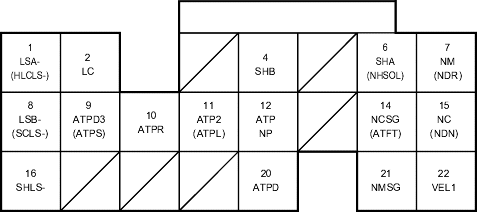

Fuel and Emissions Systems
|
11-179 |
PCM Inputs and Outputs at Connector C (22P)

Wire side of female terminals
NOTE: Standard battery voltage is 12 V.
Terminal number |
Wire colour |
Terminal name |
Description |
Signal |
11*18 |
BLU |
ATP2 (TRANSMISSION RANGE SWITCH 2 POSITION) |
Detects transmission range switch 2 position signal |
In 2nd position: about 0 V In any other position: about 5 V or battery voltage |
11*16 |
BLU |
ATPL (TRANSMISSION RANGE SWITCH L POSITION) |
Detects transmission range switch L signal |
In L position: about 0 V In any other position: about 5 V or battery voltage |
12*17 |
BLU/WHT |
ATPNP (TRANSMISSION RANGE SWITCH NEUTRAL/PARK POSITION) |
Detects transmission range switch Neutral/Park position signal |
In Park or Neutral: about 0 V In any other position: about 5 V or battery voltage |
14*18 |
GRN |
NCSG (COUNTERSHAFT SPEED SENSOR GROUND) |
Ground for countershaft speed sensor |
|
15*18 |
BLU |
NC (COUNTERSHAFT SPEED SENSOR) |
Detects Countershaft speed sensor signal |
With ignition switch ON (II), and front wheels rotating: battery voltage |
15*16 |
WHT/GRN |
NDN (CVT DRIVEN PULLEY SPEED SENSOR) |
Detects CVT driven pulley speed sensor signal |
In other than Park or neutral: pulses |
16*16 |
GRN/YEL |
SHLS - (CVT SPEED CHANGE CONTROL VALVE-SIDE) |
Ground for CVT speed change control valve |
With ignition switch ON (II): duty controlled |
20*17 |
YEL |
ATPD (TRANSMISSION RANGE SWITCH D POSITION) |
Detects transmission range switch D position signal |
In D position: about 0 V In any other position: about 5 V or battery voltage |
21*18 |
WHT/GRN |
NMSG (MAINSHAFT SPEED SENSOR GROUND) |
Ground for mainshaft speed sensor |
|
22*16 |
WHT/RED |
VEL1 (CVT SPEED SENSOR 1) |
Detects CVT speed sensor 1 |
Depending on vehicle speed: pulses When vehicle is stopped: about 0 V |
|
*1: with TWC model (except KV model) *2: without TWC model *3: D15Y4, D17A2 (KU, KQ, KZ, FO models) engines *4: with cruise control *5: D15Y4, D17A2 (KU model) engines *6: D15Y4, D16W8, D16W9, D17A2, D17A5, D17Z3, D17Z4 engines *7: D16W8, D16W9 engines *8: except D15Y2, D15Y3, D15Y5, D15Y6 engines *9: D15Y6 engine *10: D15Y4, D17A2 (KU, KQ, KZ, FO models), D17Z1 (KQ model) engines *11:KU model *12 except KU model |
*13: D15Y6, D15Y3 (KY model with immobiliser, KN model), D15Y5, D15Y4, D17Z1 (KQ, KZ models), D17A1 (KK model), D17A2 (except MA model), D17A5 (KY model with immobiliser, KN model) engines *14: except D15Y3 (PA, KW, KT, KN models), D16W9 (PA model), D17A5 (KN model) engines *15: A/T and M/T *16: CVT *17: A/T and CVT *18: A/T *19:except D15Y6, D15Y3 (KY model with immobiliser, KN model), D15Y5, D15Y4, D17Z1 (KQ, KZ models), D17A1 (KK model), D17A2 (except MA model), D17A5 (KY model with immobiliser, KN model) engine |